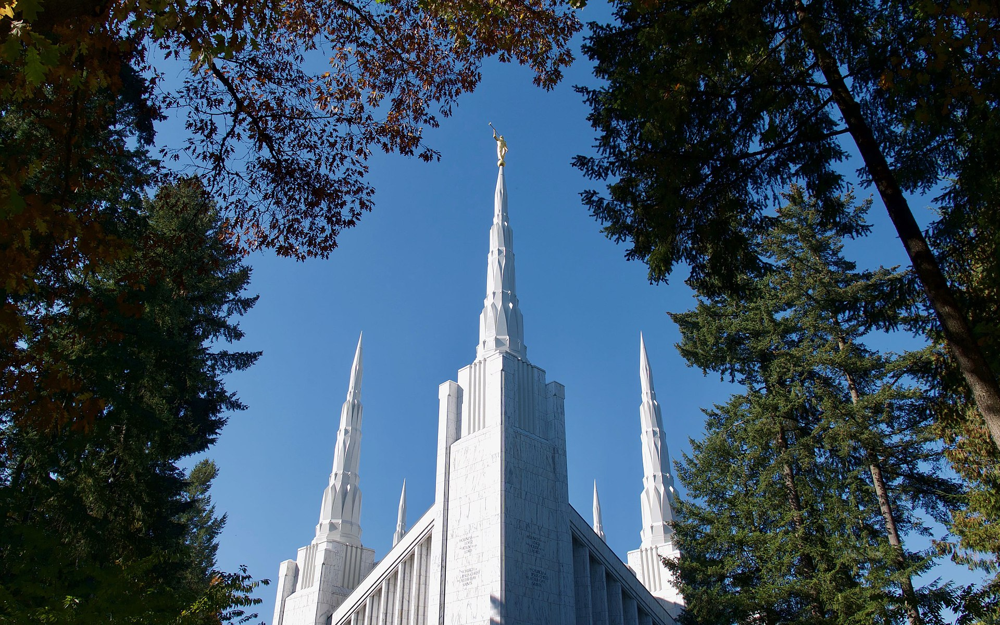

I love Portland because it is so green all year round with evergreen trees. There is a lot of rain year round, but that helps the city be beautiful. Also Mt. Hood provide a gorgeous backdrop to the city.
The Portland Oregon Temple is beautiful and meaningful to me because that is where I was sealed to my spouse 19 years ago.
